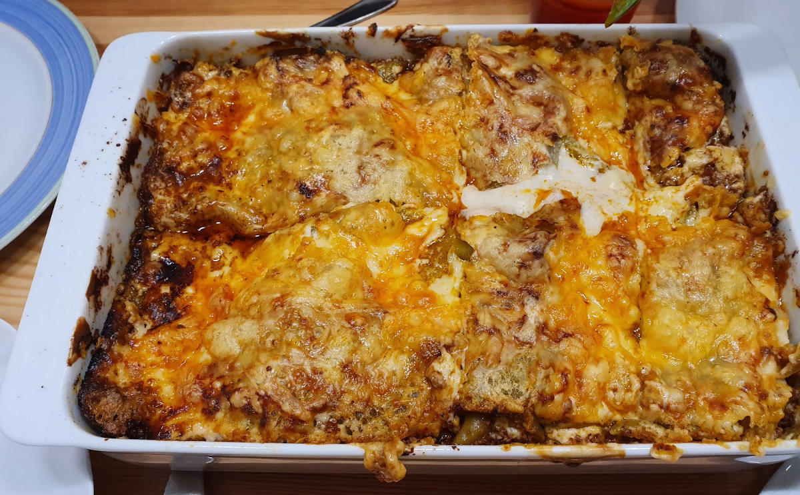

Lasagne is an Italian dish which consists of layers of pasta, Béchamel sauce and meat.
{kind=link}

It takes about 30 minutes to prepare and 40 minutes in the oven. So 1h 10min in total.
Ingredients
The following is for 4 people.
- Lasagne plates
Meat sauce:
- Sunflower Oil
- 500g ground beef
- 1 onion
- 2 cloves of garlic (Knoblauchzehe)
- 1 tablespoon of tomato puree (Tomatenmark)
- 800g peeled tomato (you can buy that in a can)
- Some red wine
- Salt
- Pepper
- Paprika spice
Bechamel sauce:
- 0.5 L milk
- 40g butter
- 40g flour
- salt and pepper
- Nutmeg (Muskat)
- Lemon juice
Tools
- Kitchen Stove with two hotplates
- Oven
- Deep pan for the oven (Auflaufform)
- Big Pot (for the bolognese)
- Fish slice
- Small Pot (Bechamel Sauce)
- Whisk
- Cutting Board
- Knife
Preparation
Bolognese
- Cut the onions and the garlic into small pieces.
- Put some oil in the pot and heat it.
- Fry the ground meat until it is brown.
- Add the onions.
- Add the garlic and the tomato puree.
- Add the peeled tomato, salt, and paprika spice until you like the taste.
- Let it cook for 30 minutes.
Bechamel Sauce
- Put butter in the small pot
- Put the flour in and whisk it until it has a bright yellow color and is creamy.
- Let it cook for 30 min at a low temperature so that the flavor of the flour goes away
- Add salt, pepper, nutmeg and lemon juice until you like the flavor
Lasagne
- Put butter in the deep pan
- Put Bolognese in the pan
- Put Lasagne plates on it
- Put Bolognese in the pan
- Put Bechamel Sauce in the pan
- Lasagne plates, Bolognese, Bechamel
- Add grated cheese on top
- Bake at 180°C (convection, Umluft) for 40 minutes in the oven until it has a nice color at the top.